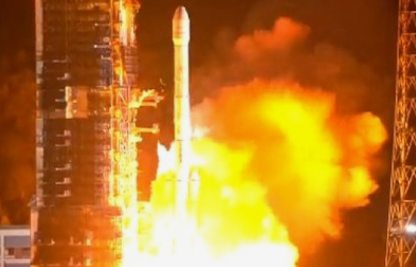

经常有人问，在空间站长期生活的航天员如何理发。关于这个问题，聂海胜早在神舟十二号任务时就给出了答案，当时他旁边坐着的是汤洪波。 在官方之前发布的各个乘组的在轨生活视频中，我们也多次看到航天员在空间站里互相理发的画面。 航天员们用到的理发器类似于地面的吸尘器，可以同步将碎发吸到所连接的软管中， 防止失重状态下碎发乱飞。
航天科普知识
空间站里的航天员怎么理发?最新画面来了!
“天宫”种菜如何实现?
首先是利用空间实验室平台，可以研究太空微重力等特殊环境对植物生长发育、生理生化等方面的影响。 第二个原因很实际，那就是种植的植物，可以为航天员提供食物、氧气和水。 植物可通过光合作用吸收航天员产生的二氧化碳，生产氧气，可一定程度上净化密闭舱室环境，提供清新的空气;生产食物，为航天员供应新鲜蔬菜水果，补充维生素和膳食纤维，丰富航天员食谱;此外，通过植物的蒸腾作用，还可实现密闭系统内水净化，为航天员补充纯净的水。 第三个原因就是植物可为航天员提供绿色鲜活的环境， 通过照料植物航天员的压力可以得到缓解，起到正向调节航天员心理情绪的作用。
一起认识空间站上又强又能干的两个“小可爱”，不是实验舱哦
能搬货、能攀爬、能巡检，还能帮助航天员，你猜出来这是谁了吗?一起认识中国空间站机械臂! 在空间站任务的历次出舱活动中，空间站机械臂托举航天员到指定位置，辅助航天员完成了各项既定任务，检验了航天员与机械臂协同工作的能力。 中国空间站未来的建造和运营中，机械臂将继续“助你一臂之力”，作为空间站核心装备发挥至关重要的作用。

火箭的发射方式，一起来看看？
目前火箭发射有三种方式：一是地面发射，二是空中发射，三是海上发射。 地面发射场发射：早期，运送有效载荷的火箭都是从地面发射场发射的。地面发射场受地理位置的制约，限制了有效载荷的发射范围， 难以满足各种有效载荷的需求，于是出现了从空中发射和从海上平台发射火箭的方式。
